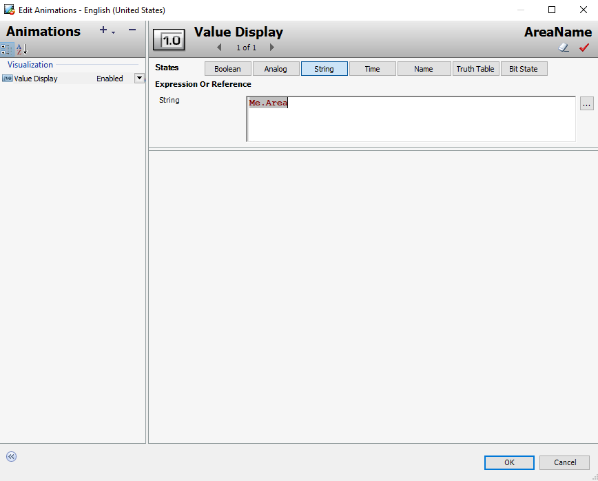
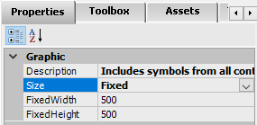

Page 213
Module 3 — Industrial Graphics | Pages 213-234
Lab 6 – Creating Symbols for Containment Objects
Lab 6 – Creating Symbols for Containment
Objects
Introduction
In this lab, you will create a symbol within the $Mixer template, which is a container template for a
number of other templates. Within the symbol created in $Mixer, you will embed symbols from the
contained objects through relative references.
Additionally, you will add and configure text elements to display object-related information, such as
object name. You will also add Connector elements to the symbol to represent connections
between the equipment.
Objectives
Upon completion of this lab, you will be able to:
Embed symbols from relative references
Configure and embed symbols within a containment relationship
Add Text elements and configure Value Display animations
Apply element styles to elements
Use connectors and connection points
Change element display orders
Configure the drawing canvas with a fixed size


Create a Symbol in $Mixer
In the following steps, you will create a symbol within the $Mixer template and open it in the
Graphic Editor.
1.
On the Templates tab, in the Training \ Project toolset, double-click $Mixer to open it in the
Object Editor.
2.
On the Attributes tab, in the Content pane, click Add.
A symbol is added with the default name of S1.
3.
In the Name field, rename the new symbol to MixingProcess_Detailed.
4.
For Description, enter Includes symbols from all contained objects.


• Appearance: AnchorFixedTo: Relative, Locked: False, AbsoluteAnchor: 0,0, RelativeAnchor: 0,0, Smoothing: True
• Runtime Behavior (red arrow points here):
• ContentType: Dropdown set to Detailed ✓
• FaceplateMode: False, MultiplePopups: True, Scripts: (Collection), ZoomPercent: 100, ZoomCenterX: 0, ZoomCenterY: 0
• Custom Properties: 0 Properties]
Lab 6 – Creating Symbols for Containment Objects
5.
With MixingProcess_Detailed selected in the Content pane, click Edit Content to open the
symbol in the Graphic Editor.


Embed Symbols from Contained Objects with Relative
References
In the following steps, you will embed symbols from the contained objects using relative references
from the Galaxy Browser.
7.
In the Graphic Editor, from the toolbar, click Embed Industrial Graphic.
The Galaxy Browser appears. It supports the ability to embed symbols from relative
references.
8.
In the Galaxy Browser, click Relative References.
9.
In the left pane, select Me.Agitator.
10. In the right pane, select Agitator_Detailed and click OK.


Lab 6 – Creating Symbols for Containment Objects
11. Click the drawing canvas to place the graphic.
The me_Agitator_Agitator_Detailed1 symbol is placed on the drawing canvas.
12. Repeat Steps 7 - 11 to embed the following symbols on the drawing canvas:


14. On the Toolbox tab, enter a search string to find SA_Tank_Vessel, and then drag the symbol
to the drawing canvas.
15. Position SA_Tank_Vessel1 on the drawing canvas to cover the Agitator, Level, and
Temperature symbols, and resize it as shown.
16. In the Elements list, select SA_Tank_Vessel1.
17. Right-click and select Order | Send To Back.
In the Elements list, SA_Tank_Vessel1 moves to the bottom of the list.


Lab 6 – Creating Symbols for Containment Objects
18. With SA_Tank_Vessel1 selected, right-click and select Substitute | Substitute Strings.
The Substitute Strings dialog box appears.
19. In the New column, replace Label with Mixer.
20. Click OK to close the Substitute Strings dialog box.
Add Connection Points and Draw Connectors Between Graphics
In the following steps, you will add connection points to the Tank, and then draw connectors
between the graphics. You will use the Connection Point element and the Connector element from
the Tools pane.
21. In the Tools pane, double-click Connection Point.
Double-clicking an element tool in the Tools pane is helpful if you need to draw multiple
elements of the same type on the canvas one after the other. After you draw the first element,
the tool remains selected so you can draw additional elements without having to reselect the
tool. Clicking another element tool in the Tools pane or pressing the ESC key cancels the
operation.


Notice that when the Connection Point element is selected, the cursor changes to a cross
hair cursor.
Now, you will place three Connection Point elements on the border of the tank.
22. Move the cross hair cursor to the left-side border of the tank graphic, and align the cursor with
the built-in connection point on the right side of the Inlet1 graphic.
Notice that the tank border turns green when the cursor hovers over it.
23. Click to place the Connection Point element on the border of the tank.
A connection point is added to the left-side border of the tank where you clicked.


Lab 6 – Creating Symbols for Containment Objects
24. Add a second Connection Point element to the left-side border of the tank, aligned with the
built-in connection point on the right side of the Inlet2 graphic.
The second connection point is added to the left-side border of the tank.
25. Add one more Connection Point element to the tank on its right-side border, aligned with the
built-in connection point on the left side of the Outlet graphic.


A connection point is added to the right-side tank border as shown below.
Now, you will add connectors between the graphics.
26. In the Tools pane, double-click Connector.
27. Press and hold your left mouse button on the built-in connection point on the top-right of the
Pump1 graphic, drag the mouse to the built-in connection point on the left side of the Inlet1
graphic, and then release your mouse button to draw the Connector.
The Connector is added between the Pump1 and Inlet1 graphics as shown below.


Lab 6 – Creating Symbols for Containment Objects
28. Press and hold your left mouse button on the built-in connection point on the top-right of the
Pump2 graphic, drag your mouse to the built-in connection point on the left side of the Inlet2
graphic, and then release your mouse button to draw the Connector.
The Connector is added between the Pump2 and Inlet2 graphics as shown below.
29. Press and hold your left mouse button on the built-in connection point on the right side of the
Inlet1 graphic, drag your mouse to the first connection point you added to the tank border, and
then release your mouse button to draw the Connector.
The Connector is added between the Inlet1 graphic and the tank border as shown below.


30. Draw a Connector between the Inlet2 graphic and the second connection point that you added
to the tank border.
31. Draw one more Connector between the third connection point that you added to the tank
border and the Outlet graphic.


Lab 6 – Creating Symbols for Containment Objects
The elements on the canvas should look similar to the following:
32. In the Tools pane, click the Pointer tool to release the Connector selection.
33. In the Elements list, hold the CTRL key and select the following elements:
Connector3
Connector4
Connector5
34. On the Properties tab, change the Appearance \ ConnectionType property to Straight.
This is to avoid the bend at the end of the valve graphics.


The lines on the canvas should look similar to the following:
Add More Labels to the Symbol
In the following steps, you will add more labels to the MixingProcess_Detailed symbol.
35. In the Tools pane, select the Text tool.


Lab 6 – Creating Symbols for Containment Objects
36. Click the drawing canvas at the top-left of the canvas.
37. Type Object Name and press Enter, and then type Area Name.
Object Name is added as the Text1 text element.
Area Name is added on the second line as the Text2 text element.
38. Click the drawing canvas to cancel creating more text elements.
The text elements should look similar to the following:
39. Select Text1, and on the Properties tab, configure the Graphic \ Name property as
ObjectName.
40. For the Appearance \ ElementStyle property, click the drop-down arrow.
Notice the Search field is available.


41. Use the Search field to search for the Title element style and select it.
The following example shows title as the search string.
Alternatively, you can scroll down the list to find and select the Title element style.
The Appearance \ ElementStyle property shows the selected element style.
42. Select Text2, and on the Properties tab, configure the element as follows:
Graphic \ Name:
AreaName
Appearance \ ElementStyle:
Heading


Lab 6 – Creating Symbols for Containment Objects
43. On the drawing canvas, select AreaName and move it a little lower on the canvas,
about 20 pixels.
44. Double-click the ObjectName element.
The Edit Animations dialog box appears.


45. In the Edit Animations dialog box, click Add Animation and select Value Display.
46. Configure the Value Display animation as follows:
47. Click OK to close the Edit Animations dialog box.
States:
Name
Name to be displayed:
Tag Name (default)


Lab 6 – Creating Symbols for Containment Objects
48. Double-click the AreaName element, click Add Animation, and add a Value Display
animation.
49. Configure the animation as follows:
50. Click OK to close the Edit Animations dialog box.
51. Click the drawing canvas to configure the symbol properties.
52. On the Properties tab, change the Graphic \ Size property to Fixed.
By default, the drawing canvas will be resized to 500 x 500 pixels from the top-left corner of
the canvas area.
States:
String
Expression Or Reference (String):
Me.Area


53. Right-click the canvas and select Select All to select all of the graphic elements.
54. Drag the selected elements to move them toward the top-left corner of the canvas.
Not all of the selected elements will fit on the canvas, as shown in the following example:
55. Click the canvas to release the selection of the graphic elements.
56. Resize the canvas to be larger by dragging the bottom-right point of the canvas, making sure
all graphic elements are within the canvas area.
The graphic should look similar to the following:
57. Save and close the MixingProcess_Detailed symbol.
58. Save and close the $Mixer object, and check it in.

Lab 6 – Creating Symbols for Containment Objects
Test the ViewApp in a Preview Session
Now you will review the ViewApp changes in the preview session.
59. Switch to the preview session.
60. Navigate to Assets \ Plant \ Production \ Line1 \ Mixer100 to view the Mixer100 graphic.
The current navigation will always be searched first for auto fill.

61. Navigate to the following and view the updated display:
Mixer400
Mixer500
The following shows the display when navigated to Mixer500.
62. When you are finished testing, minimize the preview session.
Review the lab steps above and list the main configuration actions you completed.
Consider the dependencies between steps and how skipping one might affect the outcome.